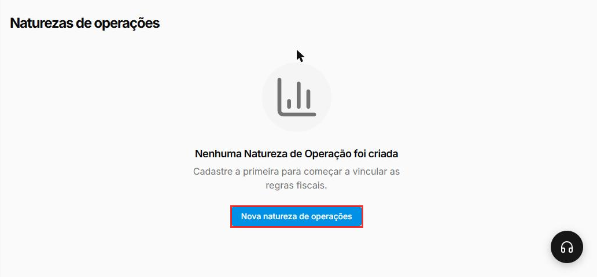
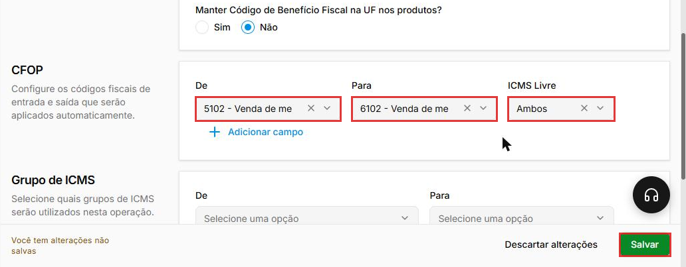
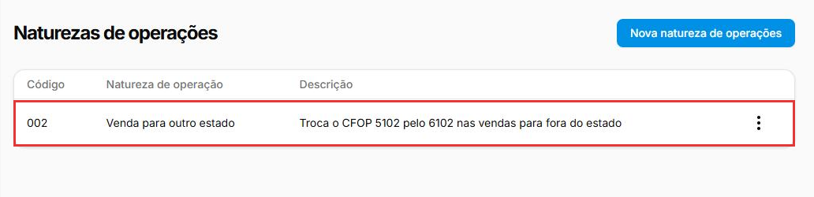
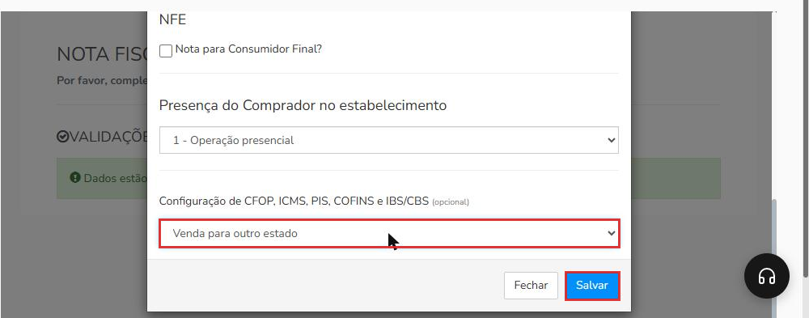
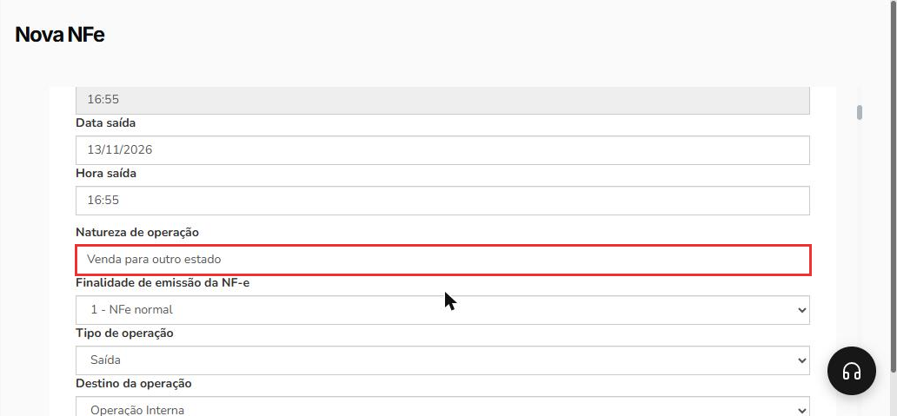
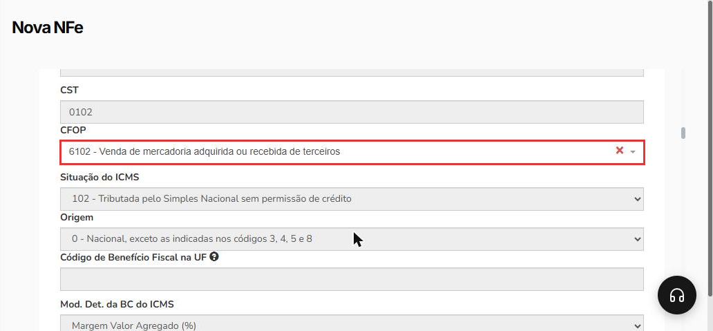

Como usar a natureza de operação na NF-e gerada a partir da venda
Quando uma venda precisa sair numa NF-e com outro CFOP, você não precisa trocar o código item por item. A natureza de operação guarda a regra de troca, e você só a escolhe ao gerar a nota. Exemplo: a loja vende para uma empresa de outro estado; os produtos usam o CFOP 5102 (venda dentro do estado), e a natureza "Venda para outro estado" troca o 5102 por 6102 na nota. Confirme os códigos da sua operação com o contador.
Entenda o conceito
O cadastro do produto guarda os códigos fiscais da operação mais comum da loja. A natureza de operação funciona como uma tabela de tradução que só entra em ação na nota em que você a escolhe:
| Peça | Onde fica | O que faz |
|---|---|---|
| Natureza de operação | Configurações > Fiscal > Natureza de Operações | Guarda o nome da operação e as regras de troca. Ganha um código (ex.: 002). |
| Regra De → Para | Seções CFOP, Grupo de ICMS e Grupo de PIS/COFINS da natureza | "Onde estiver este código no produto, use aquele na nota." |
| Configuração de CFOP, ICMS, PIS, COFINS e IBS/CBS | Último campo da janela DADOS COMPLEMENTARES, ao gerar a NF-e | É onde você escolhe a natureza para aquela nota. O nome cita IBS/CBS, mas o cadastro da natureza tem regras só de CFOP, Grupo de ICMS e Grupo de PIS/COFINS. |
Os detalhes de cada campo do cadastro estão em Como configurar a natureza de operação. O CFOP e os grupos que a regra De procura são os do cadastro do produto: veja Como configurar os dados fiscais de um produto.
Quando não usar: se a venda segue a operação de sempre (o mesmo CFOP do cadastro dos produtos), deixe o campo da natureza em branco. Ele é opcional.
Antes de começar
- Quais naturezas criar e quais códigos usar é decisão do contador. Este manual mostra onde cadastrar e como aplicar.
- A empresa precisa estar pronta para emitir NF-e: dados da empresa e do cliente, certificado digital, série fiscal e dados fiscais dos produtos. Se faltar algo, a tela da nota mostra avisos em vermelho com o botão Corrigir agora, e a janela DADOS COMPLEMENTARES não abre.
- Numa venda para outro estado, a venda precisa estar com o cliente certo, cadastrado com o endereço completo.
Nos prints, o quadrado vermelho mostra onde você deve clicar ou digitar.
Abra o cadastro de naturezas
No menu do lado esquerdo, clique em Configurações, depois em Fiscal e em Natureza de Operações. Se a loja ainda não tiver nenhuma, a tela mostra "Nenhuma Natureza de Operação foi criada". Clique em Nova natureza de operações.

Crie a regra de troca
Em Informações gerais, preencha o Nome (ex.: "Venda para outro estado") e, se quiser, a Descrição. Deixe Manter Código de Benefício Fiscal na UF nos produtos? em Não, a não ser que o contador oriente outra coisa.
Em CFOP, monte a troca:
- De: o CFOP que está no cadastro dos produtos. Exemplo: 5102.
- Para: o CFOP que a nota deve usar. Exemplo: 6102.
- ICMS Livre: Ambos, Não ou Sim, conforme o contador. No exemplo, Ambos.
Para mais uma troca, clique em Adicionar campo. As seções Grupo de ICMS e Grupo de PIS/COFINS têm os mesmos campos De e Para: preencha só se a operação também mudar os impostos. Clique em Salvar, no canto de baixo, à direita.

Confira a natureza na lista
Depois de salvar, a natureza aparece na lista com o código, o nome e a descrição. Pelos três pontos da linha você pode Editar a natureza depois.

Gere a NF-e e escolha a natureza
No menu, clique em Vendas e depois em Vendas. Na linha da venda, clique nos três pontos, em Gerar nota fiscal e em Gerar NFe. A tela Nova NFe abre com a janela DADOS COMPLEMENTARES por cima. Nela:
- CFOP: escolha um CFOP pelos atalhos ou pela lista Selecione. Exemplo: 5102, o mesmo CFOP do campo De da regra. O campo é obrigatório: sem ele, aparece "Selecione um item da lista".
- Deixe marcada a opção que já vem, Utilizar a configuração fiscal dos produtos e preencher com este CFOP onde não possuir configuração. Assim, cada produto usa o CFOP do próprio cadastro, e o CFOP escolhido aqui só entra nos produtos sem configuração fiscal.
- Configuração de CFOP, ICMS, PIS, COFINS e IBS/CBS (opcional): no fim da janela, escolha a natureza. Exemplo: Venda para outro estado.
Clique em Salvar, no rodapé da janela.

Confira a nota antes de transmitir
A nota abre preenchida. Confira três pontos:
- O campo Natureza de operação mostra o nome da natureza escolhida.

- O Destino da operação, logo abaixo, não muda sozinho com a natureza. No exemplo, continuou Operação Interna. Numa venda para outro estado, ajuste esse campo como explica Como emitir uma NF-e de venda.
- Em ITENS, o CFOP dos produtos que estão na regra De já vem trocado. No exemplo, 6102 - Venda de mercadoria adquirida ou recebida de terceiros.

Com tudo certo, siga a emissão como em Como emitir uma NF-e de venda.
Boas práticas
- Peça ao contador a lista de operações da loja e crie uma natureza para cada uma, com nomes que dizem a operação.
- Cubra todos os CFOPs dos seus produtos: se uns usam 5102 e outros 5405, crie uma regra para cada um com Adicionar campo.
- Confira a primeira nota com o contador antes de transmitir, sempre que criar uma natureza nova.
Deu algum problema?
O campo da natureza não aparece na janela Dados complementares
O campo Configuração de CFOP, ICMS, PIS, COFINS e IBS/CBS só aparece quando a empresa tem pelo menos uma natureza cadastrada. Confira em Configurações > Fiscal > Natureza de Operações se você está na empresa certa e cadastre a natureza (passos 1 a 3).
Apareceu \"Selecione um item da lista\" ao salvar a janela
O CFOP do topo da janela é obrigatório, mesmo escolhendo uma natureza. Escolha um CFOP pelos atalhos ou pela lista e salve de novo.
A janela Dados complementares não abriu e apareceram avisos vermelhos
Falta algum dado para emitir NF-e (empresa, cliente, certificado, produtos ou série). Clique em Corrigir agora em cada aviso. Se não souber o que preencher, fale com o suporte ou com o contador.
A nota abriu com o CFOP do cadastro, sem a troca
Confira se a natureza foi escolhida na janela DADOS COMPLEMENTARES, se a regra De tem o mesmo CFOP do cadastro do produto e se o CFOP escolhido no topo da janela é o mesmo do campo De. Se o produto usa outro CFOP, crie mais uma regra com Adicionar campo.
Relacionados: Como configurar a natureza de operação · Como configurar os dados fiscais de um produto · Como emitir uma NF-e de venda · NF-e referenciando NFC-e (CFOP 5929/6929)
natureza de operação de para cfop 5102 6102 venda para outro estado interestadual grupo de icms pis cofins ibs cbs dados complementares gerar nfe nota a partir da venda troca de cfop destino da operação